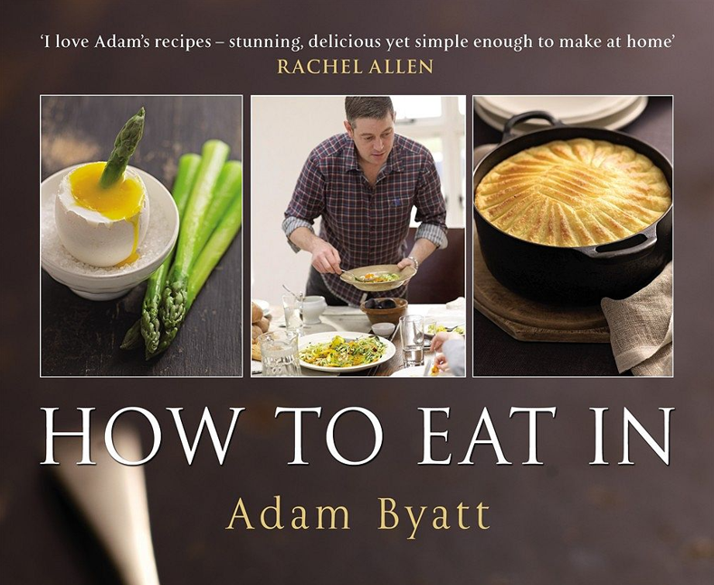
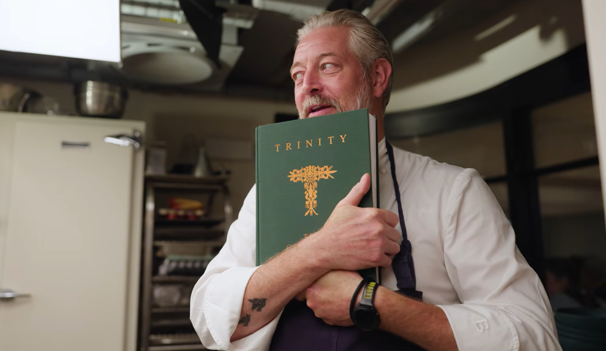
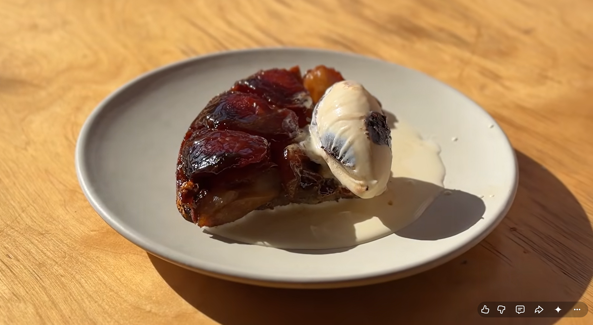
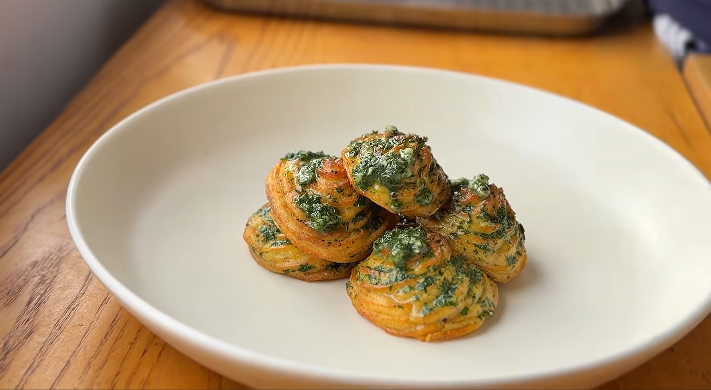
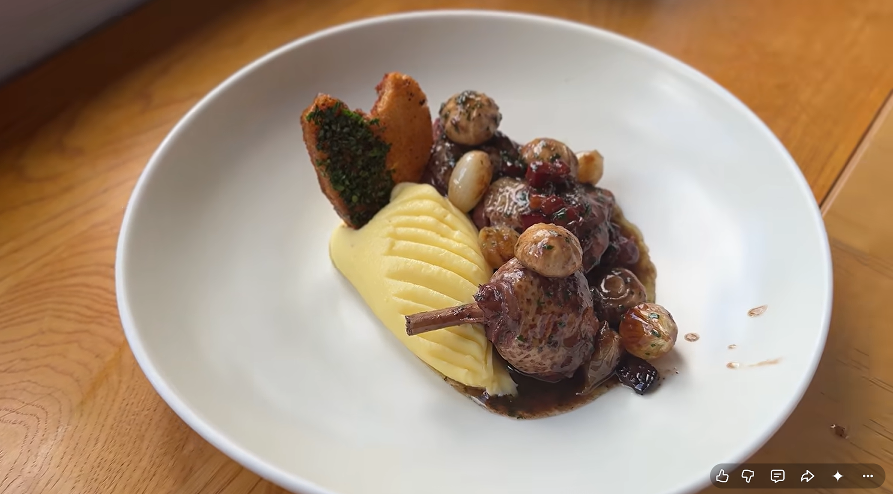
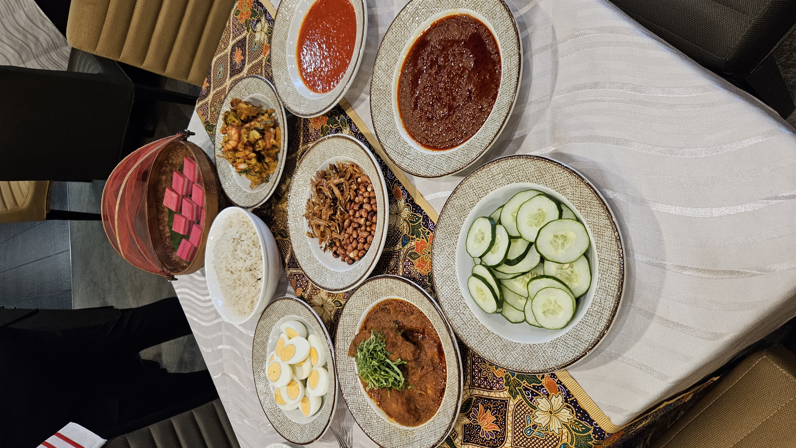
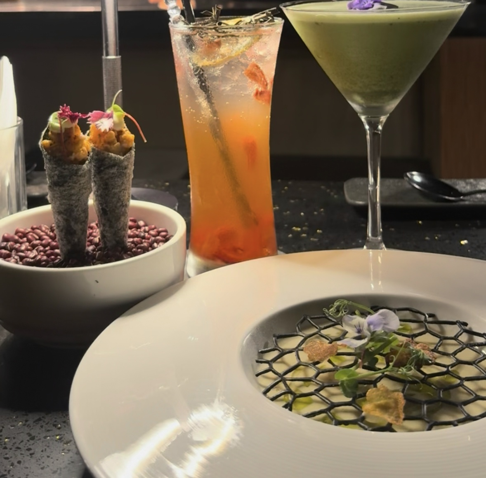
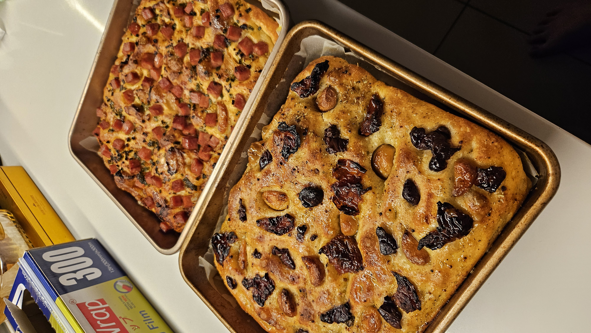

Chef Adam Byatt
Chef Patron of Trinity (Clapham, London) • Michelin Star Owner • Craft & Technique Advocate
Background
Adam Byatt is a British Michelin-starred chef and restaurateur from Rainham, Essex, England. Byatt was surrounded by culinary traditions from an early age; his mother was a professionally trained chef and his grandfather served as an army cook. At just 16 years old, after winning a prestigious apprenticeship scholarship, he joined the kitchen brigade at Claridge’s Hotel in London, later refining his high French technique under legendary figures at Le Gavroche.
In 2006, Byatt established his flagship restaurant, Trinity, in Clapham Old Town, London. Under his stewardship, Trinity earned a Michelin Star and became a cornerstone of modern British neighborhood fine dining. In 2019, Byatt was named Chef Mentor of the Year at the Craft Guild of Chefs Awards, cementing his status as a master educator in contemporary gastronomy.
What sets Byatt apart in modern media is his refusal to rely on performative theatricality. On broadcasts like BBC’s Saturday Kitchen and Great British Menu, he communicates with serene precision, championing seasonal British produce, zero-waste nose-to-tail philosophy, and traditional classical stocks. He embodies the ideal modern mentor—balancing culinary authority with media warmth.
Training History
- Claridge's Hotel
- Bournemouth College
- The Berkeley Hotel
- The Square
Authored Cookbooks
How To Eat In: Cooking at Home for Family and Friends
2010An earlier, beloved cookbook by Byatt focusing on elevated yet accessible home cooking. Packed with over 100 recipes tailored for cooking comfort, classic dishes, and hosting family and friends at home.
Trinity: The Cookbook
2026Released to celebrate 20 years of his acclaimed Michelin-starred London restaurant Trinity in Clapham, this book features a comprehensive collection of restaurant dishes, stories behind the building of Trinity, and day-long feast recipes. Includes over 80–100 signature recipes (such as semi-smoked salmon, beef tartare, and blanquette of rabbit), festive Christmas dishes, and The Trinity Repertoire—a practical mini-bible/compendium of foundational everyday recipes (like stocks, sauces, roast chicken, and shortbread) inspired by classical culinary traditions.


Media
I finally made this on the channel... Trinity's signature Tarte Tatin
Byatt, A. (2026). Instagram

Why I chose this:
Tarte Tatin is one of Adam Byatt’s signature desserts at Trinity. Sourcing this from his Instagram, how he presents high-end pastry techniques in a fast, visually captivating social format.
Summary and takeaway:
- Summary: In this short reel, Byatt never thought that he would share this recipe online. He demonstrates turning the edges of peeled apples for uniform arrangement, emphasizing to dehydrate the apple, poking the puff pastry to allow the steam to be released. He also gives a visual cue to show that the butter and sugar is perfectly emulsified before putting the whole thing into the oven. Finished with prune Armagnac ice cream and pouring cream.
- Takeaway: Dehydrating the apples to reduce moisture is a brilliant culinary technique. It proves that elite pastry relies on controlling moisture and thermal science rather than relying on luck. The tight close-up framing and clear visual cues makes it easy for viewers to follow as well.
Duchesse Potatoes - an underrated spud
Byatt, A. (2026). Instagram

Why I chose this:
Byatt posted this classic side dish on Instagram under the banner of bringing back forgotten classical French potato techniques.
Summary and takeaway:
- Summary: Baking the potatoes to reduce moisture before mashing. He shows the folding of butter, cream and egg yolks into the warm mash to create a stable emulsion before piping through a star nozzle onto a tray and baking to achieve a crisp golden crust with a fluffy interior. Brushing on garlic parsley butter at the end for taste and aesthetics.
- Takeaway: Turning a simple potato to a side dish that achieves fine-dining level status on visual platforms like Instagram through precision piping and sharp golden contrasts.
Coq au Vin Recipe - Classical French Cookery
Byatt, A. (2026). Youtube Channel

Why I chose this:
This long-form YouTube video is a perfect masterclass in foundational French culinary technique. Coq au Vin is a benchmark dish in classical cookery, and Byatt uses this platform to showcase every pillar of traditional braising—from overnight marination and proper meat searing to starch-free sauce reduction and mounting with cold butter. Byatt honours the heritage of classic technique, demonstrating to viewers how patience, step-by-step discipline, and precise heat management transform humble rustic ingredients into an elevated, Michelin-standard classic.
Summary and takeaway:
- Summary: Byatt emphasizes overnight marination of chicken in full-bodied red wine and aromatics to break down muscle fibers. He takes viewers step-by-step through rendering lardons, searing chicken skin to achieve deep flavor compounds (Maillard reaction), and mounting the reduced braising liquid with cold butter for a velvety glaze.
- Takeaway: YouTube enables a masterclass-style narrative where timing, patience, and precise technique are taught far better than in cookbooks or short form videos in my opinion. He managed to make me crave a dish I had never seen or heard about until watching his video.
JDines Culinary Journal
"Food is not just sustainance, it is a way of life."
About me
How did I come up with my name?
My foodie handle @JDines is a deliberate play on words combining my name Jadrien with the active verb Dines. I selected this handle because I created it because my life always comes back to one question, “What’s on the table?”.
The @JDines identity brings together my obssession with all things food in a way that feels true to me.
Am I a foodie?
'Foodie' I definitely consider myself one. Food always has a way to bring people together. Think about all the festive times when the whole family would get together to cook and eat their traditional foods. This moments leave lasting memories and they are what fueled my passion for gastronomy. So, welcome to The Table, where I will share my food which you might want on your plate.
3 Original Authored Foodie Posts by @JDines
@JDines
Taylor's University

JDines Practicing Malay cuisine today at Taylor's University. A full nasi lemak feast featuring coconut-pandan steamed rice, slow-braised chicken rendang, ikan bilis, peanuts, fresh cucumber, boiled eggs, cucur udang and hand-made sambal.
#TaylorsUniversity #CulinaryManagement #MalaysianCuisine #NasiLemak
Camera Angle: A top-down flat-lay spread shot of the finished plates against the traditional batik cloth showing the culture and heritage of the cuisine.
Foodie View: As we know nasi lemak is sold almost everywhere in Malaysia. After learning how time consuming nasi lemak is, it made me appreciate the people which do this daily, selling by the roadside and in hawkers which usually goes for less than RM10.
@JDines
@noirdining.kl

JDines Immersive while affordable fine dining at Noir, Tamarind Square. I went there with my girlfriend for our 4th anniversary and needless to say, it became my favourite restaurant after only dining there once. Operating on an intimate format of just 10 guests per session across only 3 sessions a day, it feels deeply personlised.
#Noirdining.kl #FineDining #ModernGastronomy #MixologyCraft #PlatingAesthetics
Camera Angle: Low angle right at tabletop height brings the drinks into vertical alignment with the amuse-bouche cones. It draws the eye across the entire spread while capturing the chef working in the background kitchen, creating an immersive, chef's counter dining atmosphere.
Foodie View: The beauty of modern fine dining lies in intentionality and focus. Capping service at strictly 10guests persession and running only 3 sessions a da is an operational masterclass. It drastically reduceskitchen food waste through precise prep yield, allows the chefs to deliver a culinary journey without compromising dish quality and ensures courses arrive smoothly without long waits.
@JDines
R&D Studio

JDines Why high hydration focaccia is the hill I will die on. Fresh out of the ven from today's personal bread R&D session: confit garlic with olives and sun-dried tomatoes on the bottom; chili oil, ham and scallion on the top. 80% hydration is the sweet spot as well as cold fermenting in the fridge for 2 days.
#PersonalR&D #BreadBaking #Focaccia #FermentationScience
Camera Angle: 60 degree high-angle overhead shot. Framing baking trays side-by-side to highlight topping variations while capturing the glistening crust of the focaccia under warm lighting.
Foodie View: Curiosity, patience and the creativity to curate is all part of my passion for food. Testing hydration ratios and fermentation times to achieve the perfect crust and crumb, mixing flavours that compliment each other and having it turn out incredibly delicious is what makes food so deeply rewarding.
Construction in Progess. Stay tuned.
Welcome to the table.
Deconstructing restaurant concepts, culinary techniques, and the systems behind modern dining.